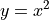

教中学生学编程3：函数图像¶
这一节我们再学习一个学习数学时也很常用的功能：画函数图像。这回我们需要两个名称 空间：:
from numpy import *
from matplotlib.pyplot import *
其中numpy是number python的缩写，是用来处理数字的；matplotlib是math plot library 的缩写，是用来plot（打点）的。
我们主要通过numpy来准备数字，然后matplotlib绘制图像。matplotlib绘图的过程称为“打点”，就是你给出x和y的值，它在对应的位置给你打上点，所以你需要用numpy给定所有的这些点。
我们画一个最简单的二次函数的图像：

图如下：

我们理解一下这组命令：
命令1,2两个是引入名称空间，这个没有什么可说的。
命令3是创建一个范围（a range)，其实就是一组数，它有三个参数：起始值（这个值本身 算在里面），最终值（这个值本身不算在里面），步长（就是多远放一个点，这实际上创 建了一个这样一组数：

然后我们对这组数都计算x**2，得到y：

然后我们开始打点（matplotlib默认会把这些点连起来），plot(x, y)，很简单吧。（根 据版本不同，如果图像显示不出来，需要下show()这个命令，图像才会显示出来，这样其 实更好，因为你可以画完很多个plot，才一次显示出来。读者可以根据需要增加）：
我们可以一次打多个函数进行对比，下面我们用对比两次方， 三次方，四次方，五次方的 区别

这只能看到一条线，但如果你仔细看，x轴上有一些特殊的颜色——看来是我们把图拉得太开 了，我们调整一下x的范围，为了让这个调整更容易一些，我们把上面的动作写成“定义”， 像这样：

这个有点样子了，但还是不突出，干脆我们把范围调整到-2到2之间，用0.05做步长看看：

再往下调：

现在对比比较明显了，但哪条线是哪条线呢？我们修改一下那个定义，给每条线都加个颜色：

plot后面跟着的那些r, b, y, g分别表示red, blue, yellow, green。你可以查下面这个 表决定用什么：
| 'b' | blue |
| 'g' | green |
| 'r' | red |
| 'c' | cyan |
| 'm' | magenta |
| 'y' | yellow |
| 'k' | black |
| 'w' | white |
引号里面还可以带其他字母表示线型：
'-'solid line style'--'dashed line style'-.'dash-dot line style':'dotted line style'.'point marker','pixel marker'o'circle marker'v'triangle_down marker'^'triangle_up marker'<'triangle_left marker'>'triangle_right marker'1'tri_down marker'2'tri_up marker'3'tri_left marker'4'tri_right marker's'square marker'p'pentagon marker'*'star marker'h'hexagon1 marker'H'hexagon2 marker'+'plus marker'x'x marker'D'diamond marker'd'thin_diamond marker'|'vline marker'_'hline marker
如果你看不懂那个英语什么意思，试一下就知道了，比如这样：

最后我们看看正弦波的美吧：

我们对各种信号的“调制”，都来自三角函数这种“波”的特性，中间那个蓝色的是一个简单 的正弦波，但它和其他任何函数组合起来，都会让其他信号产生波动，这个特性，几乎是 我们今天整个通讯技术的学术基础。